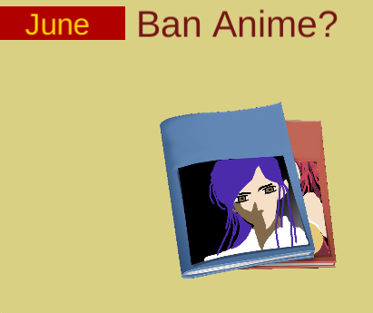
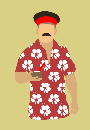

The Road to Power

Description
Take control of the People's Republic of Chernikova in this communist choose-your-own-adventure game. Be the kind of leader you want, and deal with problems however you desire. Deal with threats from at home and abroad, including the evil West. Strengthen your power or lose it all, because in the end, only you can walk The Road to Power.
Change Log: (8/1) Fixed a small bug that made one ending inaccessible
Screenshots & Images


Play The Game
Feedback & Comments
FurkanFS (31. Jul 2017): I think there is something wrong with your update!
Jamie McClenaghan (01. Aug 2017): I think the idea is great! Its a very indepth game. Well done!
peremily (01. Aug 2017): The game doesn't seem to work, just getting a screen with a white box and some text that says title and another that says text block and another that says month
🎤 tinykidtoo (01. Aug 2017): It seems there was some issues with the web build, a fixed version is being uploaded right now.
BesSlaaneshi (01. Aug 2017): i see great work here! but my knowledge in english are not good and it's hard to me to play it. And i think: it's take much time to read all texts. But still you made great work
Thirsty (01. Aug 2017): Absolutely loved this game and plan to play it a few more times at least. The web version didn't work but I am glad I downloaded and played this. It gave me more than a few laughs.
SurprisinglyShockedCat (01. Aug 2017): Great game, some sound would really lighten it up though.
Doc ill (01. Aug 2017): Nice job! I like how the player doesn't see the impact of his/her choices immediately, yet the choices always come back later to either reward or bite the player. While the game could use some sound effects and music, the focus of branching paths is delivered very well here.
Manumeq (01. Aug 2017): Really nice and moody game there! The gameplay keeps you guessing what will come next and the ending is in no way predictable. The game could use some sound efeccts and transitions to look a bit better.
Tyler Miller (01. Aug 2017): Really funny and in depth, I can tell that a lot of thought and effort was put into it! Haven't played a choose your fate style game in a while, it was very refreshing, good job!
Bocodillo (01. Aug 2017): Fun and comedic game! Some sound effects would a lot but overall a very enjoyable game.
pkenney (01. Aug 2017): This was a cool idea - I was hoping someone did something about political power running out, and this was a good mix of tricky choices and humor. I had a good time playing! I am not sure my citizens could say the same, however. Enjoyed the graphic styling as well as the humor. Nice work!
oxrock (01. Aug 2017): Not generally into games like this honestly. Luckily I was able to put people in gulags and get assassinated, so that helps.
Gep (01. Aug 2017): I really enjoyed this game. I wish that it didn't cut my title off though,
zaygellard (01. Aug 2017): I get "You do not have access to this page." when I try to play the browser version
Michael Terrorized Games (01. Aug 2017): I like your take on running out of power not literally but figuratively.
Arkthalohs (01. Aug 2017): Good humor and writing. I particularly liked how most of the choices in the first half ended up having follow-up events depending on what I chose in the second half, and that the consequences made sense, even if they weren't immediately apparent when I made the first choice. It was also fun the breadth of choices, from building a nuclear arsenal to accidentally overrunning the country with sentient plants. Having some music and sound would probably improve the game, but other than that it looks pretty polished.
joemag (01. Aug 2017): There's a bit of good humor in here. Feels very "choose your adventure" although I wish there was some more feedback to my choices. At a point I just started clicking randomly and still felt like it was advancing. This could have worked a lot better with a bit of Reigns-style interactivity. Also some Soviet-sounding music would have really enhanced the whole experience.
jackyjjc (01. Aug 2017): WAAAAAAAAAAAAAAAT!!!! I clicked 'launch nuke to the west' an nothing happened!!! Or was that intentional? Great satirical game! The dialogues and choices are funny and The plot is engaging. The images comes with the choices are appropriate and nicely drawn. However, I do not know what are the differences between the choices and sometimes I feel like it made no effect (Of course I can see some choices led to major event). Some music would be nice. Nice work! I would play a few more times and see if there are alternative endings :)
Vlad Chechyotkin (01. Aug 2017): Can't open the web build :(
ijona (01. Aug 2017): It was fun)))))))
Condensate (01. Aug 2017): @jackyjjc Looks like I made a typo in one of the flag checks that made that ending inaccessible. It's fixed now. @vlad-chechyotkin If the web build isn't working, try disabling ad block if you're running it or a different browser. If all else fails, you can download the standalone builds, at least on Windows. @joemag Well, all games are just clicking randomly when you get down to it, aren't they? In all honestly though, I was never a big fan of "stats manager" style gameplay. The game is supposed to be in the style of choose-your-own-adventure books and visual novels rather than something more "gamey", and it doesn't work for you because of that it's completely understandable.
ToonTeamJ (01. Aug 2017): This was quite hilarious. I was looking for practical and realistic solutions to my problems, so the sentient plants really caught me off guard.
StubbyRogue46 (01. Aug 2017): Best game I have found this far.
Hikari Kyuubi (02. Aug 2017): Nice game xD Would be nice to have some soundtrack, is kinda lonely without it. I tried to be nice and ended dead at the end >: Then I tried again changing this one step that made me die, and I became famous :D I don't think you applied the theme, but was a nice experience xD PS: that anime tho, I laugh hard.
jhandsy (02. Aug 2017): Really nice cyoa. Good, funny writing. I played through it A BUNCH (until I got a good ending). I thing "struggling to manage power" is an appropriate interpretation of the theme.
kl0z (02. Aug 2017): Couldnt play! I download ot extract it but the screen was blank and when I clicked it crashed.
mrboxbox (03. Aug 2017): Wow this is super fun. Unfortunately i got killed because i banned anime and put all the weebs in the gulag
CTTFOW (03. Aug 2017): It was a good game and entertaining. I was a little surprised by getting assassinated as everything seemed to have been going well for me up until that point. In a way I wished there was a way to see what the public (and the West) thought of me, but then again I did like the spontaneous feeling. Good job, though!
TheAspiringHacker (03. Aug 2017): I thought that your game was very engaging, with some funny aspects as well. I liked the reference to free software. :) I wish that I could attempt to befriend the West.
prettylucky (05. Aug 2017): This was good for a little laugh:D I'd have liked it if my choices felt more important though. Gulag or not gulag, didn't feel very different. I only played once, so maybe they mattered more than I noticed, but I got hit with the food shortage after being railroaded into picking all the options one at a time (as the event 'came to my attention' again, which was a cool mechanic by the way). Just curious, is there a way to stay in power?
Condensate (05. Aug 2017): @prettylucky There's three endings where you stay in power. In order to get any of them, you need to not get assassinated and you need to resolve the food shortages.
christina-antoinette-neofotistou (07. Aug 2017): I got most of the endings, I'm so happy with this one! How long did it take you, it's pretty impressive!
Rune_Drawer (07. Aug 2017): destroyed the world, supported game devs, produced triffids, got a harem. 10/10 (/¯–‿･)/¯ gonna play again and unlock all endings ^_^